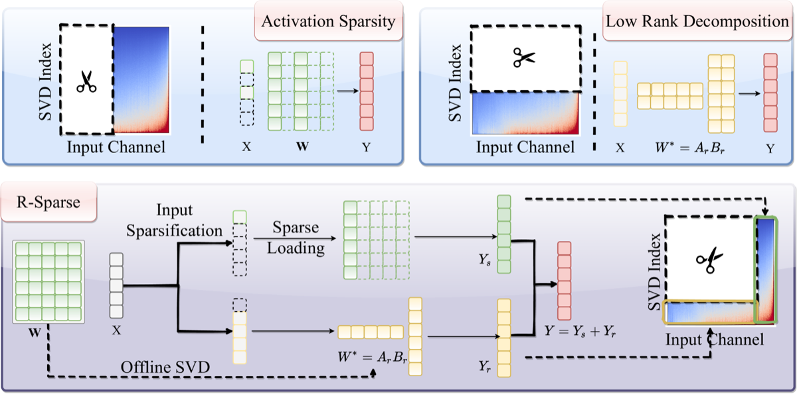
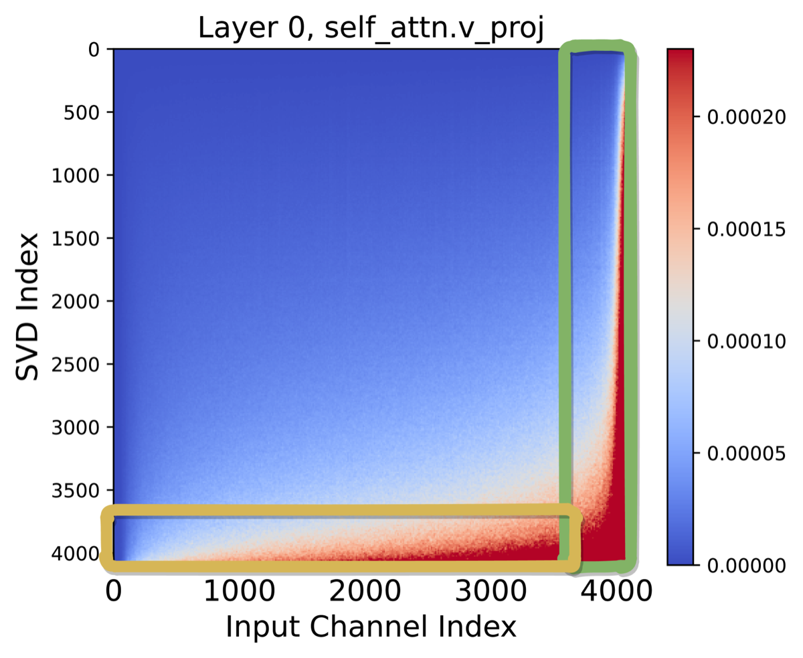

Why it matters왜 중요한가
The question isn't "which activations to drop" but "what to do with the ones you'd drop."
핵심은 "어떤 활성을 버리느냐"가 아니라 "버릴 활성을 어떻게 처리하느냐"다.
Activation sparsity loads only the active rows/columns of weights from HBM into SRAM, directly attacking the memory bottleneck of the decode phase. But it stumbles on modern LLMs: ReLU's lossless zeroing is gone, predicting active output channels before computing them is hard, and training-free methods cap out near 33% model-level sparsity. R-Sparse reframes the problem — instead of either keeping or discarding a channel, it keeps the big ones exactly and routes the small ("non-sparse") ones through a cheap offline-SVD low-rank module. Because the discarded contributions empirically look like a low-rank set of biases, this recovers most of the lost signal almost for free, and it applies to both attention and MLP blocks with no retraining.
활성 희소성은 HBM에서 SRAM으로 활성 행/열만 적재해 디코딩 단계의 메모리 병목을 직접 공략한다. 하지만 최신 LLM에선 막힌다 — ReLU의 무손실 0-처리가 사라졌고, 계산 전에 활성 출력 채널을 예측하기 어려우며, 학습 없는 방법은 모델 전체 희소도 약 33%에서 한계에 부딪힌다. R-Sparse는 문제를 재정의한다. 채널을 "유지/폐기" 둘 중 하나로 보는 대신, 큰 채널은 그대로 두고 작은("비-희소") 채널은 값싼 오프라인 SVD 저랭크 모듈로 보낸다. 폐기되는 기여가 경험적으로 저랭크 바이어스 집합처럼 보이기 때문에, 잃은 신호 대부분을 거의 공짜로 복원하며 어텐션·MLP 블록 모두에 재학습 없이 적용된다.

By the numbers핵심 숫자
at comparable accuracy모델 전체 희소도
(성능 유지)
speedup (custom kernel)엔드투엔드 생성
속도 향상(맞춤 커널)
(Llama-2-7B, same budget)CATS 대비 평균 향상
(Llama-2-7B, 동일 예산)
(Llama-2/3, Mistral)평가 과제 · 3개 모델군
(Llama-2/3, Mistral)
(fully training-free)학습 토큰
(완전 training-free)
(Llama-2-7B, 1× A6000)진화 탐색 시간
(Llama-2-7B, A6000 1장)
Results — matches dense, crushes prior sparsity결과 — 밀집 모델 동률, 기존 희소법 압도
| Model | Dense | Baseline | R-Sparse | Δ |
|---|---|---|---|---|
| Llama-2-7B (CATS 40%) | 65.88 | 46.26 | 65.00 | +18.74 |
| Llama-2-7B (GRIFFIN 50%) | 65.88 | 45.91 | 64.06 | +18.15 |
| Llama-3-8B (CATS 40%) | 69.44 | 35.91 | 68.37 | +32.46 |
| Llama-3-8B (GRIFFIN 50%) | 69.44 | 45.11 | 66.20 | +21.09 |
| Mistral-7B (GRIFFIN 50%) | 69.89 | 48.07 | 68.39 | +20.32 |
In one diagram한 장의 그림
Idea: two observations that justify the split아이디어: 분할을 정당화하는 두 관찰
Small channels behave like biases작은 채널 ≈ 바이어스
Using a soft multi-phase ReLU, the authors show the discarded (small-magnitude) input channels' output contribution collapses into just a few data-dependent bias terms. Across thousands of tokens these biases span a low-rank subspace (stable rank ≈ 400), so the whole non-sparse residual can be approximated cheaply — even at 90% input sparsity.
소프트 다단계 ReLU를 써서, 폐기되는(작은 크기) 입력 채널의 출력 기여가 소수의 데이터 의존 바이어스 항으로 수렴함을 보인다. 수천 토큰에 걸쳐 이 바이어스들은 저랭크 부분공간(안정 랭크 ≈ 400)을 이루므로, 비-희소 잔차 전체를 값싸게 근사할 수 있다 — 입력 희소도 90%에서도.
Importance concentrates in a corner중요도가 한 구석에 집중
Scoring each (input channel × singular value) pair S = σ_i·X_j·V[j,i] reveals contribution mass concentrated in the bottom-right — large channels and dominant singular components. Sparsity drops the left part, low-rank drops the top; R-Sparse instead removes the top-left, keeping what matters. Patterns vary by layer (q/k easier to low-rank; middle layers more sparse), motivating per-layer tuning.
각 (입력 채널 × 특이값) 쌍을 S = σ_i·X_j·V[j,i]로 점수화하면 기여가 우하단에 몰린다 — 큰 채널 과 지배적 특이 성분. 희소법은 좌측을, 저랭크는 상단을 버리지만 R-Sparse는 좌상단을 제거해 중요한 부분을 남긴다. 패턴은 층마다 달라(q/k는 저랭크화 쉬움, 중간 층은 더 희소함) 층별 조정을 동기화한다.

How it works어떻게 작동하나
- Threshold the input입력 임계 처리For a sparsity budget s, set threshold t(s) as the s-th percentile of |X|; keep channels with |X| ≥ t(s) as the sparse part, mask the rest.희소 예산 s에 대해 임계값 t(s)를 |X|의 s번째 백분위로 설정 — |X| ≥ t(s) 채널은 희소부로 유지, 나머지는 마스킹.
- Sparse path Y_s희소 경로 Y_sCompute Y_s = σ_t(s)(X)·Wᵀ, loading only the weight rows for active channels (stored column-major for bandwidth) into SRAM.Y_s = σ_t(s)(X)·Wᵀ 계산 — 활성 채널의 가중치 행만(대역폭을 위해 열 우선 저장) SRAM에 적재.
- Low-rank path Y_r저랭크 경로 Y_rRun the masked-out residual through an offline SVD module: Y_r = (X − σ_t(s)(X))(A_r B_r)ᵀ where A_r=U_rΣ_r^½, B_r=Σ_r^½Vᵀ. One-time SVD, zero inference latency cost.마스킹된 잔차를 오프라인 SVD 모듈에 통과: Y_r = (X − σ_t(s)(X))(A_r B_r)ᵀ, A_r=U_rΣ_r^½, B_r=Σ_r^½Vᵀ. 일회성 SVD라 추론 지연 없음.
- Search per-layer ρ층별 ρ 탐색An evolutionary search (pop 32, 5 generations, ~1 hr) picks each layer's sparse-vs-rank ratio ρ by minimizing C4 perplexity, then Y = Y_s + Y_r at 50% model-level sparsity.진화 탐색(개체 32, 5세대, 약 1시간)이 C4 퍼플렉서티 최소화로 층별 희소-랭크 비율 ρ를 선택 → 모델 희소도 50%에서 Y = Y_s + Y_r.
What to take away그래서, 가져갈 것
Training-free, no predictor. By sparsifying input channels (read directly off X) instead of output channels, R-Sparse skips both the costly ReLUfication training and the fragile active-channel prediction that limited prior methods.
학습 불필요, 예측기 불필요. 출력이 아닌 입력 채널을 X에서 직접 읽어 희소화함으로써, 기존 방법을 제약하던 값비싼 ReLUfication 학습과 불안정한 활성 채널 예측을 모두 건너뛴다.
Sparse + low-rank are complementary. Alone, low-rank collapses (33% avg) and pure sparsity lags; together they hit dense-level accuracy at 50% sparsity because each layer's mix is searched, not fixed.
희소 + 저랭크는 상호보완적. 단독으로는 저랭크가 붕괴(평균 33%)하고 순수 희소법은 뒤처지지만, 둘을 결합하면 층별 비율을 탐색하므로 50% 희소도에서 밀집 수준 정확도에 도달.
Stacks with quantization. With 4-bit GPTQ, R-Sparse still holds ~66% avg on common-sense tasks (vs 68% dense), so the savings compound rather than conflict.
양자화와 함께 쌓인다. 4-bit GPTQ와 결합해도 상식 과제 평균 약 66%(밀집 68% 대비)를 유지 — 절감 효과가 충돌 없이 누적된다.
Whole-model coverage. Unlike CATS/GRIFFIN (MLP only), R-Sparse sparsifies attention and MLP, which is what unlocks the jump from ~33% to 50% model-level sparsity.
모델 전체 적용. MLP만 다루는 CATS/GRIFFIN과 달리 어텐션 과 MLP를 모두 희소화 — 이것이 약 33%에서 50% 모델 희소도로의 도약을 가능케 한다.